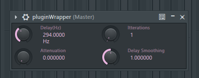

Here's a windows-only vst2 version of the latest version (this plugin isn't completely finished yet):
Your anti-virus or browser might say this is a virus, but I can assure you it's not. Whether you trust me is up to you...
This plugin is still in development; there are many bugs and it will probably crash sometimes. I recommend recording the sounds you make with it instead of using it live so it doesn't crash your project.
How to install:
Drop the dll in a folder you use for plugins (C:/Program Files/Steinberg/VSTPlugins by default), and rescan for plugins in your DAW.
Demonstration:
Honeycomb on a ting noise:
Honeycomb in FL Studio with the default FL studio interface:
